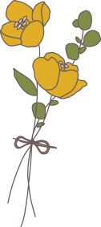
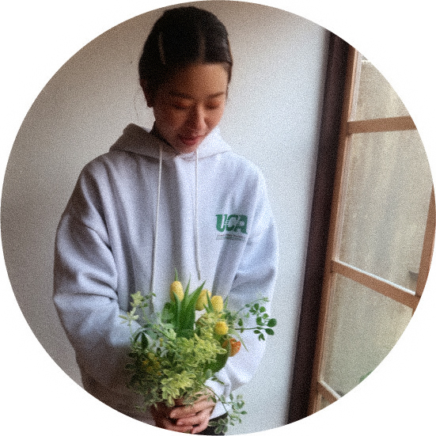
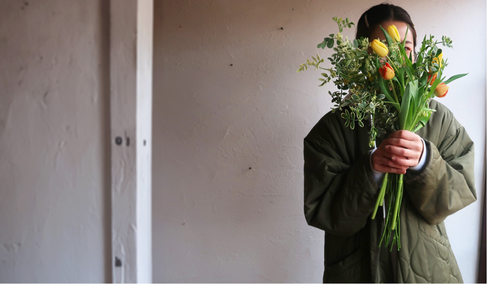

about
藤野 里保
大阪府出身 1992年
海と山とお花がだいすきです

デザイナーを目指すきっかけ
元々、お花屋さんでフローリストとして働いていました。
そこでは色の組み合わせを考えたり、贈る相手のことを考えながら花束を作っていました。
自分が作ったものでお客様に喜んでいただけることが嬉しく、ワクワクしていました。
その頃からWEBデザインや配色などに興味を持ち始めました。ウェブ上には様々なデザインがあり、とても関心したのと同時に自分でもデザインができるようになりたいと思い、スクールを受講しました。
デザインも花束と同じで、色のトーンや素材の組み合わせで全く異なるものになるので お客様がどういったものを求めているのか、フローリストを通して学んだことをデザインにも生かしていければいいなと思ってます。
